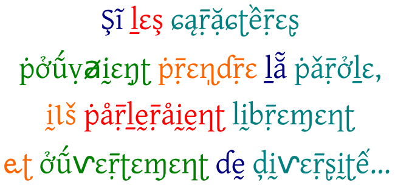

Préface

Voyage à travers Unicode : un espace international riche en diversité
Inspiré de http://sincerelymichael.com/work/english/english.html par Michael Ciancio.
La lettre est la pièce minimale de l'expression écrite. C'est dire combien elle est nécessaire dans la vie de l'écriture. L'homme a eu le besoin d'écrire depuis la nuit des temps et l'histoire ne manque pas d'exemples montrant l'évolution des caractères depuis les origines jusqu'à nos jours. Si les caractères se combinent pour supporter une information (mots, phrases), leurs formes ne sont pas pour autant neutres, elles parlent. Il suffit de parcourir un livre pour s'en convaincre : titres, sous-titres, corps de texte… Prenant progressivement conscience des possibilités qui leur étaient offertes au cours de l'histoire, les locuteurs et les spécialistes de l'écriture ont commencé à documenter ou à créer des formes variées, chacun poursuivant un but particulier, grandement influencés par la culture et le contexte donné. On assiste alors lentement à la prolifération des typos surtout depuis l'avènement de l'ére informatique. Malheureusement, si des efforts constants sont faits pour rendre plus disponibles des fontes dans les langues largement parlées, d'autres langues moins connues et avec moins de locuteurs ne peuvent pas encore être utilisées sur un ordinateur parce que les glyphes qui les composent manquent encore jusqu'à aujourd'hui.
Ce livre veut être un guide pour celui qui ne trouve pas de fonte qui corresponde exactement à ses aspirations d'expression graphique, afin qu'il puisse aisément en adapter ou redessiner une ou plusieurs selon ses besoins. Il donne aussi aux locuteurs des langues qui ne disposent pas encore de fontes appropriées les pistes pour en trouver, en adapter ou en créer dans le but de faciliter l'usage par voie électronique et ainsi favoriser la préservation de la richesse culturelle de ces langues.
Les différents experts qui ont participé à sa rédaction n'ont pas manqué de donner au lecteur les rudiments nécessaires pour comprendre les aspects juridiques, techniques ainsi que toutes les attentions et intentions qu'il faut avoir à l'esprit en utilisant et en créant telle ou telle typo. Au-delà de la vonlonté de servir à tout utilisateur francophone d'ouvrage de référence technique précis en matière de création de fontes, ce manuel se veut également un outil indispensable de sensibilisation aux enjeux important du copyright et du droit d'auteur dans ce domaine.
Les fontes sont l'endroit magnifique où la connaissance, l'art, l'histoire, le code et le droit se rencontrent. C'est dire à quel point elles sont l'enjeu parfois trop muet d'attentes, de tensions et de désirs !
Ceci est un livre libre et les pistes proposées sont libres, elles aussi. Les nombreux exemples illustrés et la sélection de ressources en annexe font de ce livre un guide pour tous ceux qui recherchent des explications claires sur un domaine riche et complexe ainsi que des réponses pratiques aux différentes problématiques correspondantes.
Bonne lecture, bonne découverte et bienvenue dans la communauté des utilisateurs et des créateurs de fontes libres !